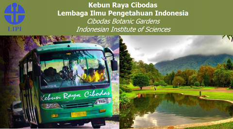

Clicks: 1

Info Bunga-Bunga di Kabupaten Cianjur
Copyright 2015 Cipa Development
TAMAN BUNGA NUSANTARA (TBN)
SEJARAH
Taman Bunga Nusantara merupakan taman display bunga pertama di Indonesia. Taman ini dilengkapi dengan berbagai koleksi tanaman berbunga yang terkenal dan unik dari seluruh dunia. Dengan beratus varietas tanaman berbunga di taman, Taman Bunga Nusantara benar - benar menjadi tempat dimana bunga - bunga dari seluruh dunia tumbuh. Kami menampilkan areal yang sangat luas bagi pertumbuhan bunga - bunga dari Amerika Selatan, Australia, Afrika serta Asia. Kami memiliki lahan display bedding plant seluas 50.000 m2.
Ibu Dani Bustanil Arifin , pemakarsa sekaligus Ketua Umum Yayasan Bunga Nusantara, beserta anggota lainnya mulai merintis pembangunan taman ini pada tahun 1992, dan secara intensif pelaksanaan pembangunan tahap awal taman dimulai sejak tahun 1993. Tujuan utama pembangunan taman ini bagi Yayasan Bunga Nusantara adalah menciptakan Taman Bunga Nusantara sebagai salah satu aset wisata berbasis wisata agro nasional dengan skala internasional. Selain itu, tujuan lain diciptakannya Taman Bunga Nusantara adalah:
1. Membantu Pemerintah di bidang pembangunan agrowisata.
2. Menyediakan fasilitas dan sarana untuk penelitian, pendidikan, dan meningkatkan kreatifitas masyarakat.
3. Membantu meningkatkan pertumbuhan sektor ekonomi, pendapatan daerah dan masyarakat khususnya petani bunga.
4. Melestarikan tanaman langka dan wawasan lingkungan hidup.
5. Lapangan kerja masyarakat sekitar.
6. Meningkatkan cinta masyarakat akan bunga sebagai sumber pendapatan dan kesejahteraan.
7. Menyediakan tempat rekreasi yang sehat bagi wisatawan domestik dan mancanegara.
8. Mencari sumber pertumbuhan baru di sektor pertanian.
ALAMAT
Jalan Mariwati KM 7 Desa Kawungluwuk Kecamatan Sukaresmi - Cianjur, Jawa Barat
JAM OPERASIONAL
Senin - Jumat 08.00 - 17.00 WIB
Sabtu, Minggu, dan Libur Nasional 08.00 - 17.30 WIB
HARGA TIKET MASUK (HTM)
Per Orang : Rp. 30.000,-
Parkir Motor : Rp. 5000,-
Parkir Mobil : Rp. 10.000,-
Parkir Minubus : Rp. 15.000,-
Parkir Bus : Rp. 20.000,-
KONTAK
No. Telp:
+62 263 581 617
+62 263 581 618
email: tamanbunganusantara@yahoo.co.id.
WEBSITE
www.tamanbunga-nusantara.com.
KEBUN RAYA CIBODAS

SEJARAH
Didirikan pada tanggal 11 April 1852 oleh Johannes Ellias Teijsmann, seorang kurator Kebun Raya Bogor pada waktu itu, dengan nama Bergtuin te Tjibodas (Kebun Pegunungan Cibodas). Pada awalnya dimaksudkan sebagai tempat aklimatisasi jenis-jenis tumbuhan asal luar negeri yang mempunyai nilai penting dan ekonomi yang tinggi, salah satunya adalah Pohon Kina (Cinchona calisaya). Kemudian berkembang menjadi bagian dari Kebun Raya Bogor dengan nama Cabang Balai Kebun Raya Cibodas. Mulai tahun 2003 status Kebun Raya Cibodas menjadi lebih mandiri sebagai Unit Pelaksana Teknis Balai Konservasi Tumbuhan Kebun Raya Cibodas di bawah Pusat Konservasi Tumbuhan Kebun Raya Bogor dalam kedeputian Ilmu Pengetahuan Hayati Lembaga Ilmu Pengetahuan Indonesia (LIPI).
Lokasi Kebun Raya Cibodas – LIPI berada di kaki Gunung Gede dan Gunung Pangrango pada ketinggian kurang lebih 1.300 – 1.425 meter di atas permukaan laut dengan luas 84,99 hektar. Temperatur rata-rata 20,06 °C, kelembaban 80,82 % dan rata-rata curah hujan 2.950 mm per tahun. Kebun Raya Cibodas merupakan tempat yang nyaman untuk beristirahat sambil menikmati keindahan berbagai jenis tumbuhan yang berasal dari Indonesia dan negara-negara lain. Kebun Raya Cibodas berjarak ±100 KM dari Jakarta dan ± 80 KM dari Bandung.
ALAMAT
Jl. Kebun Raya Cibodas, Cipanas, Sindanglaya, Kec. Cianjur, Jawa Barat 43253.
JAM OPERASIONAL
Senin – Minggu Pukul 08.00 WIB sampai pukul 17.00 WIB.
HARGA TIKET MASUK (HTM)
Rp. 9.500,- per orang, Tiket kendaraan roda dua Rp 5.000,- per motor dan tiket kendaraan roda empat Rp 16.000,-.
KONTAK
No. Telp: (0263) 512233
email: jasin.krcibodas@mail.lipi.go.id.
WEBSITE
www.krcibodas.lipi.go.id.